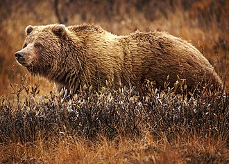
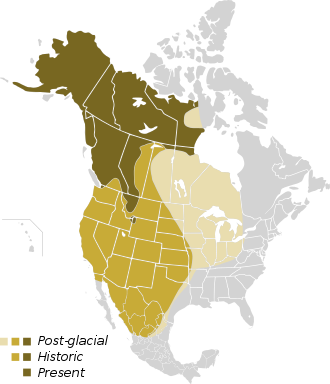
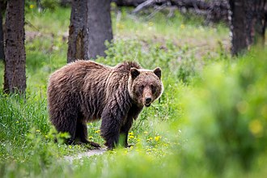
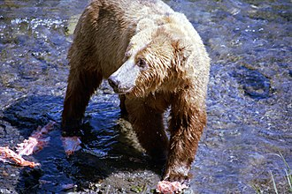
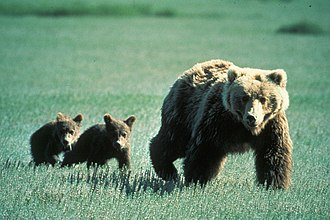

For other uses, see Grizzly bear (disambiguation). "Grizzly" redirects here. For other uses, see Grizzly (disambiguation).
The grizzly bear (Ursus arctos horribilis), also known as the North American brown bear or simply grizzly, is a population or subspecies[2] of the brown bear inhabiting North America.
In addition to the mainland grizzly (Ursus arctos horribilis), other morphological forms of brown bear in North America are sometimes identified as grizzly bears. These include three living populations—the Kodiak bear (U. a. middendorffi), the Kamchatka bear (U. a. beringianus), and the peninsular grizzly (U. a. gyas)—as well as the extinct California grizzly (U. a. californicus†),[3][4] Mexican grizzly (formerly U. a. nelsoni†), and Ungava-Labrador grizzly (formerly U. a. ungavaesis†).[5][6] On average, grizzly bears near the coast tend to be larger while inland grizzlies tend to be smaller.
The Ussuri brown bear (U. a. lasiotus), inhabiting Russia, Northern China, Japan, and Korea,[4][7][8] is sometimes referred to as the "black grizzly", although it is no more closely related to North American brown bears than other subspecies of the brown bear around the world.
Classification
Meaning of "grizzly"
Meriwether Lewis and William Clark first described it as grisley, which could be interpreted as either "grizzly" (i.e., "grizzled"—that is, with grey-tipped or silver-tipped hair) or "grisly" ("fear-inspiring", now usually "gruesome").[9] The modern spelling supposes the former meaning; even so, naturalist George Ord formally classified it in 1815 as U. horribilis for its character.[10]
Evolution and geneticsPhylogentics
Classification has been revised along genetic lines.[3] There are two morphological forms of Ursus arctos: the grizzly and the coastal brown bears, but these morphological forms do not have distinct mtDNA lineages.[11]
Ursus arctosBrown bears originated in Eurasia and traveled to North America approximately 50,000 years ago,[12][13] spreading into the contiguous United States about 13,000 years ago.[14] The genome of the grizzly bear was sequenced in 2018 and found to be 2,328.64Mb (mega-basepairs) in length, and contain 30,387 genes.[15]
In the 19th century, the grizzly was classified as 86 distinct species. However, by 1928 only seven grizzly species remained,[4] and by 1953, only one species remained globally.[16] However, modern genetic testing reveals the grizzly to be a subspecies of the brown bear (Ursus arctos). Biologist R.L. Rausch found that North America has but one species of grizzly.[2] Therefore, everywhere it is the "brown bear"; in North America, it is the "grizzly", but these are all the same species, Ursus arctos.
Subspecies in North AmericaIn 1963, Rausch reduced the number of North American subspecies to one, Ursus arctos middendorffi.[17]
Further testing of Y-chromosomes is required to yield an accurate new taxonomy with different subspecies.[3
Coastal grizzlies, often referred to by the popular but geographically redundant synonym of "brown bear" or "Alaskan brown bear" are larger and darker than inland grizzlies, which is why they, too, were considered a different species from grizzlies. Kodiak Grizzly Bears were also at one time considered distinct. Therefore, at one time there were five different "species" of brown bear, including three in North America.[18]
Appearance
Most adult female grizzlies weigh 130-180 kg (290-400 lb), while adult males weigh on average 180-360 kg (400-790 lb). Average total length in this subspecies is between 198 cm (78 in) and 240 cm (94 in),[19] with an average shoulder height of 102 cm (40 in) and hindfoot length of 28 cm (11 in).[20] Newborn bears may weigh less than 500 g (18 oz). In the Yukon River area, mature female grizzlies can weigh as little as 100 kg (220 lb). For a female, these average weights would be 136 kg (300 lb) inland and 227 kg (500 lb) coastal, respectively.[21]
Although variable in color from blond to nearly black, grizzly bear fur is typically brown with darker legs and commonly white or blond tipped fur on the flank and back.[22]
Characteristics- A pronounced muscular hump appears on adult grizzlies' shoulders; black bears do not have this hump.
- Aside from the distinguishing hump a grizzly bear can be identified by a "dished in" profile of their face with short, rounded ears, whereas a black bear has a straight face profile and longer ears.[23]
- A grizzly bear can also be identified by its rump, which is lower than its shoulders; a black bear's rump is higher than its shoulders.[23]
- A grizzly bear's front claws measure about 51-102 mm (2-4 in) in length; a black bear's claws measure about 25-51 mm (1-2 in) in length.[23]
Range
In North America, grizzly bears previously ranged from Alaska down to Mexico and as far east as the western shores of Hudson Bay;[12] the species is now found in Alaska, south through much of western Canada, and into portions of the northwestern United States (including Washington, Idaho, Montana and Wyoming), extending as far south as Yellowstone and Grand Teton National Parks.[24] In Canada, there are approximately 25,000 grizzly bears occupying British Columbia, Alberta, the Yukon, the Northwest Territories, Nunavut, and the northern part of Manitoba.[12]
An article published in 1954 suggested they may be present in the tundra areas of the Ungava Peninsula and the northern tip of Labrador-Quebec.[25] In British Columbia, grizzly bears inhabit approximately 90% of their original territory. There were approximately 25,000 grizzly bears in British Columbia when the European settlers arrived.[12] However, population size has since significantly decreased due to hunting and habitat loss. In 2008, it was estimated there were 16,000 grizzly bears. A revised Grizzly bear count in 2012 for British Columbia was 15,075.[26] Population estimates for British Columbia are based on hair-snagging, DNA-based inventories, mark-and-recapture, and a refined multiple regression model.[27] In 2003, researchers from the University of Alberta spotted a grizzly on Melville Island in the high Arctic, which is the most northerly sighting ever documented.[28][29]
PopulationsAround 60,000 wild grizzly bears are located throughout North America, 30,000 of which are found in Alaska.[12] and up to 29,000 live in Canada. The Alaskan population of 30,000 individuals is the highest population of any province / state in North America. Populations in Alaska are densest along the coast, where food supplies such as salmon are more abundant.[30] The Admiralty Island National Monument protects the densest population: 1,600 bears on a 1,600 square-mile island.[31] The majority of Canada's grizzlies live in British Columbia.[32]
In the lower 48 United States, around 1,000 are found in the Northern Continental Divide in northwestern Montana.[33] About 1,000 more live in the Greater Yellowstone Ecosystem in the tri-state area of Wyoming, Idaho and Montana.[34] There are an estimated 70-100 grizzly bears living in northern and eastern Idaho. In September 2007, a hunter produced evidence of one bear in the Selway-Bitterroot Wilderness ecosystem, by killing a male grizzly bear there.[35]
In the North Cascades ecosystem of northern Washington, grizzly bear populations are estimated to be fewer than 20 bears, but there is a longterm management plan to reintroduce the bears to North Cascades National Park.[36]
 Extirpated populations and recoveryThe grizzly bear's original range included much of the Great Plains and the southwestern states, but it has been extirpated in most of those areas. Combining Canada and the United States, grizzly bears inhabit approximately half the area of their historical range.[12]
Although the once-abundant California grizzly bear appears prominently on the state flag of California and was the symbol of the Bear Flag Republic before the state of California's admission to the Union in 1850, the subspecies or population is currently extinct. The last known grizzlies in California were killed in the Sierra foothills east of Fresno in the early 1920s.[37]
The killing of the last grizzly bear in Arizona in 1936 at Escudilla Mountain is included in Aldo Leopold's Sand County Almanac.[38] There has been no confirmed sighting of a grizzly in Colorado since 1979.[39]
Other provinces and the United States may use a combination of methods for population estimates. Therefore, it is difficult to say precisely what methods were used to produce total population estimates for Canada and North America, as they were likely developed from a variety of studies. The grizzly bear currently has legal protection in Mexico, European countries, some areas of Canada, and in all of the United States. However, it is expected that repopulating its former range will be a slow process, due to various reasons, including the bear's slow reproductive habits and the effects of reintroducing such a large animal to areas prized for agriculture and livestock.
 